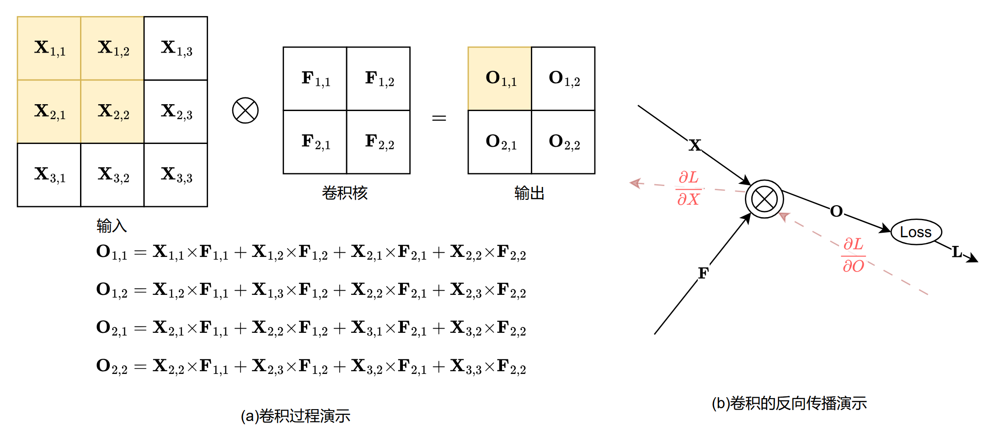

2023级答案（A）¶
2024—2025学年第一学期¶
考试科目：数据科学与工程数学基础 任课教师：树扬
姓 名：_ 学 号：_
专 业：_ 班 级：_
| 题目 | 一（选择题） | 二 | 三 | 四 | 五 | 六 | 总分 | 阅卷人签名 |
|---|---|---|---|---|---|---|---|---|
| 得分 |
一、（20分）
选择题
单选题一道3分，多选题一道5分，总计20分。
单选题不选、错选均不得分；多选题不选、错选不得分，少选得3分。
(1) 若 $\boldsymbol{A}=[\mathbf{a_1},\mathbf{a_2},...,\mathbf{a_n}]\in {\mathbb{R}}^{m \times n}$ ，列空间为 $Col(\boldsymbol{A})$，行空间为 $Col(\boldsymbol{A}^T)$，零空间为 $Null(\boldsymbol{A})$，左零空间为 $Null(\boldsymbol{A}^T)$。下列说法错误的是（D）
(A) $Col(\boldsymbol{A}^T)$ $\perp$ $Null(\boldsymbol{A})$，$Col(\boldsymbol{A}) $ $\perp$ $Null(\boldsymbol{A}^T )$
(B) $dim(Col(\boldsymbol{A}^T))=dim(Col(\boldsymbol{A}))=rank(\boldsymbol{A})$
(C) 若 $\mathbf{x}\in {\mathbb{R}}^{m}$ 在 $Col(\boldsymbol{A})$ 上的正交投影为 $\pi(\mathbf{x})$，则对 $\forall i=1,...,n$ 有$\mathbf{a_i^T}(\mathbf{x}-\pi(\mathbf{x}))=0$
(D) $dim(Null(\boldsymbol{A}^T))=n-rank(\boldsymbol{A})$，$dim(Null(\boldsymbol{A}))=m-rank(\boldsymbol{A})$
(2) 已知矩阵$\boldsymbol{A}=\begin{bmatrix} 1 & 0 & -1\ -1 & 2 & 0 \ \end{bmatrix}$，$(\boldsymbol{A}\boldsymbol{A}^T)^{-1}=\begin{bmatrix} 5/9 & 1/9\ 1/9 & 2/9\ \end{bmatrix}$，则矩阵 $\boldsymbol{A}$ 的广义逆是（B）
(A) $\begin{bmatrix} 2/3 & -1/9\ 1/3 & 4/9 \ -1/3 & -1/9 \ \end{bmatrix}$
(B) $\begin{bmatrix} 4/9 & -1/9\ 2/9 & 4/9 \ -5/9 & -1/9 \ \end{bmatrix}$
(C) $\begin{bmatrix} 4/9 & -1/3\ 2/9 & 1/3 \ -5/9 & -1/3 \ \end{bmatrix}$
(D) $\begin{bmatrix} 4/9 & -1/9\ 2/9 & 4/9 \ -5/9 & 1/9 \ \end{bmatrix}$
(3) 下面的集合不是凸集的是（B）
(A) 一条射线，即 ${\mathbf{x_0}+\theta\mathbf{v}\ |\ \theta \geq0 ,\mathbf{v} \not= \mathbf{0}}$
(B) 若$0<r_1 < r_2$，${(x, y) \mid r_1^2 \leq (x - x_0)^2 + (y - y_0)^2 \leq r_2^2}$
(C) 设$||·||$是$\mathbb{R}^{n}$中的范数，$r>0$，${\mathbf{x}\ | \ ||\mathbf{x}-\mathbf{x_0}||\leq r }$
(D) 多面体${ \mathbf{x}| \mathbf{Ax}\leq\mathbf{b}, \mathbf{Cx}=\mathbf{d}}$。其中$\mathbf{A}\in\mathbb{R}^{m \times n}, \mathbf{C} \in\mathbb{R}^{p \times n},\mathbf{x}\in\mathbb{R}^{n},\mathbf{b}\in\mathbb{R}^{m},\mathbf{d}\in\mathbb{R}^{p}$，$\mathbf{x}\leq\mathbf{y}$表示向量$\mathbf{x}$的每个分量均小于等于$\mathbf{y}$的对应分量。
(4) 下列关于向量范数说法错误的是（C）
(A) 设 $\boldsymbol{u}$ 为 $n$ 维单位列向量，$I_n$ 为$n$维单位矩阵，$\boldsymbol{A}=I_n-2\boldsymbol{u}\boldsymbol{u}^T$。若$\boldsymbol{A}\boldsymbol{x}=\boldsymbol{y}$，则$||\boldsymbol{x}||{2}=||\boldsymbol{y}||{2}$
(B) 若 $\boldsymbol{x}\in {\mathbb{R}}^n$，则 $||\boldsymbol{x}||{2}\leq||\boldsymbol{x}||{1}\leq n||\boldsymbol{x}||_{\infty}$
(C) 若 $\boldsymbol{x}\in {\mathbb{R}}^n$，$p>0$，则 $(\sum_{i=1}^{n} x_i^p)^{\frac{1}{p}}$ 是向量的$l_p$范数
(D) $\boldsymbol{P}=(\boldsymbol{p}_1,\boldsymbol{p}_2,...,\boldsymbol{p}_n)\in \mathbb{R}^{n \times n}$为非奇异矩阵，则对于 $\forall \boldsymbol{x}\in {\mathbb{R}}^n$，$||\boldsymbol{P}\boldsymbol{x}||_1 \leq \underset {1 \leq j \leq n}{max} ||\boldsymbol{p}_j||_1 \cdot ||\boldsymbol{x}||_1$
(5) 考虑一个线性映射$\Phi: \mathbb{R}^2 \to \mathbb{R}^3 $，其在标准基（基矩阵为单位阵）下的变换矩阵为：$\begin{bmatrix} 1 & 2 \ -1 & 3 \ 4 & 2 \ \end{bmatrix}$
我们寻找一组新的基下的 $\Phi$ 的变换矩阵。令新的基分别为：
$$ \tilde{\boldsymbol{B}} = \left( \begin{bmatrix} 1 \ 1 \end{bmatrix}, \begin{bmatrix} 0 \ 1 \end{bmatrix} \right), \tilde{\boldsymbol{C}} = \left( \begin{bmatrix} 1 \ 1 \ 0 \end{bmatrix}, \begin{bmatrix} 1 \ 0 \ 1 \end{bmatrix}, \begin{bmatrix} 0 \ 1 \ 1 \end{bmatrix} \right) $$
通过计算可得：
$$ \tilde{\boldsymbol{B}}^{-1} = \begin{pmatrix} 1 & 0 \ -1 & 1 \ \end{pmatrix}, \quad \tilde{\boldsymbol{C}}^{-1} = \frac{1}{2} \begin{pmatrix} 1 & 1 & -1 \ 1 & -1 & 1 \ -1 & 1 & 1 \ \end{pmatrix} $$
请问下面哪项为新的基下的变换矩阵（A）
$$ (A)\ \frac{1}{2}\begin{pmatrix} -1 & 3 \ 7 & 1 \ 5 & 3 \ \end{pmatrix} \quad (B)\ \begin{pmatrix} -1 & 3 \ 7 & 1 \ 5 & 3 \ \end{pmatrix} \quad (C)\ \begin{pmatrix} -5 & 5 \ 1 & 4 \ -2 & 5 \ \end{pmatrix} \quad (D)\ \frac{1}{2}\begin{pmatrix} -7 & 3 \ 5 & 1 \ -1 & 3 \ \end{pmatrix} $$
(6) 【多选】设矩阵 $\boldsymbol{A}\in \mathbb{R}^{m \times n}$，它的完全奇异值分解为$\boldsymbol{A}=\boldsymbol{U} \sum \boldsymbol{V}^T$ ，紧奇异值分解为$\boldsymbol{A}=\boldsymbol{U}_r \sum_r \boldsymbol{V}_r^T$，$r=rank(\boldsymbol{A})$，下列关于SVD(奇异值分解)的说法错误的是（ADE）
(A) 对矩阵 $\boldsymbol{A}$ 的奇异值分解中，$\boldsymbol{U},\boldsymbol{V}$ 矩阵是唯一的
(B) $rank(\boldsymbol{A})=rank(\boldsymbol{A}^T\boldsymbol{A})=rank(\boldsymbol{A}\boldsymbol{A}^T)$
(C) $\boldsymbol{A}$ 的奇异值分解可以表示为：$\boldsymbol{A} = \sum_{i=1}^r \sigma_i \boldsymbol{u}_i \boldsymbol{v}_i^\top$。在 $r \geq 2 $时，令 $\boldsymbol{w} \in \mathbb{R}^n $ 为一个向量且满足：$\boldsymbol{w} = \alpha \boldsymbol{v}_1 + \beta \boldsymbol{v}_2$，则$\boldsymbol{A}\boldsymbol{w}=\alpha \sigma_1 \boldsymbol{u}_1+\beta \sigma_2 \boldsymbol{u}_2$
(D) $\forall i=r+1,...,m,\ j=1,...,n$，$\boldsymbol{u}_i^T\boldsymbol{A}\boldsymbol{v}_j\not=0$
(E) 利用截断SVD方法，寻找秩为 $k$ （$k<r$）的矩阵$\boldsymbol{X}\in \mathbb{R}^{m \times n}$ 使得 $||\boldsymbol{A}-\boldsymbol{X}||_F$ 最小。寻找得到的最优矩阵就是在紧奇异值分解中对 $\sum_r$ 任意地选择 $k$ 个奇异值 $\sigma_i$ 和其对应的 $\boldsymbol{U}_r$、$\boldsymbol{V}_r$ 中的向量 $\boldsymbol{u}_i,\boldsymbol{v}_i$，再将选择到的 $\sigma_i \boldsymbol{u}_i \boldsymbol{v}_i^\top$ 累加求和即可。
二、（12分）
完成以下问题：
(1)（4分） $A=\begin{bmatrix} 1 & 2 \ 4 & 5 \ 0 & -3 \end{bmatrix}$ 分别求$A$的 $l_1$ 范数，$1$范数，$l_{\infty}$范数，$\infty$范数
(2)（5分） 求向量 $\mathbf{x}=\begin{bmatrix} 1 \ 2 \ 3 \end{bmatrix}$ 在矩阵 $M=\begin{bmatrix} 1 & -1 \ 2 & 4 \ 4 & 2 \end{bmatrix}$的列空间上的正交投影。
【已知： $(M^TM)^{-1}=\frac{1}{72}\begin{bmatrix} 7 & -5 \ -5 & 7 \ \end{bmatrix}$】
(3)（3分） 设$\mathbf{B} \in \mathbb{R}^{n \times n}$，$I$ 是 n 阶单位矩阵，$||\mathbf{B}||$ 是关于 $\mathbf{B}$ 的矩阵 $l_2$ 范数。已知 $||\mathbf{B}|| < 1$，$I-\mathbf{B}$ 可逆，证明：$(1-||\mathbf{B}||)\cdot||(I-\mathbf{B})^{-1}|| \leq n$。
【提示：$I=(I-\mathbf{B})^{-1}\cdot(I-\mathbf{B})=(I-\mathbf{B})^{-1}-(I-\mathbf{B})^{-1}\mathbf{B}$，
则$(I-\mathbf{B})^{-1}=I+(I-\mathbf{B})^{-1}\mathbf{B}$】
答案¶
(1) $l_1$ 范数：$\stackrel{3}{\underset{i=1}{\sum}} \stackrel{2}{\underset{j=1}{\sum}}|a_{ij}|=15$，$1$范数：$\max{1+4,2+5+|-3| }=10$
$l_{\infty}$范数：$\max{1,2,4,5,0,|-3| }=5$，$\infty$范数：$\max{1+2,4+5,0+|-3| }=9$ （各1分）
(2) 可得$rank(M)=2$，列空间$\text{span}{\begin{bmatrix} 1 \ 2 \ 4 \end{bmatrix}, \begin{bmatrix} -1 \ 4 \ 2 \end{bmatrix} }$，故$A=\begin{bmatrix} 1 & -1 \ 2 & 4 \ 4 & 2 \end{bmatrix}$
投影矩阵$P=A(A^TA)^{-1}A^T=\begin{bmatrix} \frac{1}{3} & -\frac{1}{3} & \frac{1}{3} \ -\frac{1}{3} & \frac{5}{6} & \frac{1}{6} \ \frac{1}{3} & \frac{1}{6} & \frac{5}{6} \end{bmatrix}$ （列出投影矩阵式子1分，算出投影矩阵2分）
则 $\mathbf{x}$ 在$M$的列空间上的正交投影为 $P\mathbf{x}=\begin{bmatrix} \frac{2}{3} \ \frac{11}{6} \ \frac{19}{6} \end{bmatrix}$ （求出最后的结果2分）
(3) 证明：$(I-\mathbf{B})^{-1}=I+(I-\mathbf{B})^{-1}\mathbf{B}$
根据三角不等式和矩阵 $l_2$ 范数的相容性，有
$||(I-\mathbf{B})^{-1}||=||I+(I-\mathbf{B})^{-1}\mathbf{B}||\leq||I||+||(I-\mathbf{B})^{-1}\mathbf{B}||\leq||I||+||(I-\mathbf{B})^{-1}||\cdot||\mathbf{B}||$ （利用三角不等式1分，利用相容性1分）
移项，可得$(1-||\mathbf{B}||)\cdot||(I-\mathbf{B})^{-1}|| \leq ||I||=\sqrt{n} \leq n$ （最终结果不等式1分）
三、（17分）
$$ \mathbf{A}=\begin{bmatrix} 1 & 1 \ 2 & 0 \ 2 & 3 \end{bmatrix},\quad \mathbf{B}=\begin{bmatrix} 0 & 3 & 1 \ 0 & 4 & -2 \ 2 & 1 & -1 \end{bmatrix},\quad \mathbf{c}=\begin{bmatrix} 17 \ 6 \ 1 \end{bmatrix},\quad \mathbf{d}=\begin{bmatrix} 1 \ -2 \ 4 \end{bmatrix} $$
(1)（2分） 矩阵$\mathbf{A}$能否进行QR分解，为什么？直接写出结论及原因即可。
(2)（6分） 求矩阵$\mathbf{B}$的QR分解。
(3)（5分） 利用(2)中的分解结果来求解方程组 $\mathbf{Bx}= \mathbf{c}$
(4)（4分） 利用正规化方程组，求解 $\mathbf{A}$ 和 $\mathbf{d}$ 所对应的最小二乘问题 $\underset{\mathbf{x}}{min}||\mathbf{A}\mathbf{x}-\mathbf{d}||_2$ 的全部解。【对正规化方程组的求解方法不限】
答案¶
(1) 因为 $\mathbf{A}$ 列满秩，所以它能进行QR分解。 （写出能进行QR分解给1分，写出列满秩给1分）
(2) 利用施密特正交化方法进行QR分解
$b_1=\begin{bmatrix} 0 \ 0 \ 2 \end{bmatrix}$，$b_2=\begin{bmatrix} 3 \ 4 \ 1 \end{bmatrix}$，$b_3=\begin{bmatrix} 1 \ -2 \ -1 \end{bmatrix}$
$c_1=b_1=\begin{bmatrix} 0 \ 0 \ 2 \end{bmatrix}$
$c_2=b_2-\frac{\langle c_1,b_2\rangle}{\langle c_1,c_1\rangle}c_1=\begin{bmatrix} 3 \ 4 \ 1 \end{bmatrix}-\frac{1}{2} \begin{bmatrix} 0 \ 0 \ 2 \end{bmatrix}=\begin{bmatrix} 3 \ 4 \ 0 \end{bmatrix}$
$c_3=b_3-\frac{\langle c_2,b_3\rangle}{\langle c_2,c_2\rangle}c_2-\frac{\langle c_1,b_3\rangle}{\langle c_1,c_1\rangle}c_1=\begin{bmatrix} \frac{8}{5} \ -\frac{6}{5} \ 0 \end{bmatrix}$ （正交化正确得2分）
再单位化可得 $q_1=\begin{bmatrix} 0 \ 0 \ 1 \end{bmatrix}$，$q_2=\begin{bmatrix} \frac{3}{5} \ \frac{4}{5} \ 0 \end{bmatrix}$，$q_3=\begin{bmatrix} \frac{4}{5} \ -\frac{3}{5} \ 0 \end{bmatrix}$ （单位化正确得1分）
$R=\begin{bmatrix} |c_1| & \langle b_2,q_1\rangle & \langle b_3,q_1\rangle \ 0 & |c_2| & \langle b_3,q_2\rangle \ 0 & 0 & |c_3| \end{bmatrix}=\begin{bmatrix} 2 & 1 & -1 \ 0 & 5 & -1 \ 0 & 0 & 2 \end{bmatrix}$ （正确写出R得3分）
故$\mathbf{B}=\begin{bmatrix} 0 & \frac{3}{5} & \frac{4}{5} \ 0 & \frac{4}{5} & -\frac{3}{5} \ 1 & 0 & 0 \end{bmatrix} \begin{bmatrix} 2 & 1 & -1 \ 0 & 5 & -1 \ 0 & 0 & 2 \end{bmatrix}$
(3) 由 (2) 得 $Q=\begin{bmatrix} 0 & \frac{3}{5} & \frac{4}{5} \ 0 & \frac{4}{5} & -\frac{3}{5} \ 1 & 0 & 0 \end{bmatrix}$ $R=\begin{bmatrix} 2 & 1 & -1 \ 0 & 5 & -1 \ 0 & 0 & 2 \end{bmatrix}$
求解$\mathbf{Bx}= \mathbf{c}$ 即求解 $QR\mathbf{x}=\mathbf{c}$ （列出该式子得1分）
令 $\mathbf{y}=R\mathbf{x}$ 先解 $Q\mathbf{y}=\mathbf{c}$，可得$\mathbf{y}=\begin{bmatrix} 1 \ 15 \ 10 \end{bmatrix}$ （正确解得y得2分）
再求解$\mathbf{y}=R\mathbf{x}$，可得$\mathbf{x}=\begin{bmatrix} 1 \ 4 \ 5 \end{bmatrix}$ （正确解得x得2分）
(4) 求解 $\mathbf{A}$ 和 $\mathbf{d}$ 所对应的最小二乘问题即求解方程 $\mathbf{A}^T\mathbf{A}\mathbf{x}=\mathbf{A}^T\mathbf{d}$ （列出该式子得2分）
$\mathbf{A}^T\mathbf{A}=\begin{bmatrix} 9 & 7 \ 7 & 10 \end{bmatrix}$，$\mathbf{A}^T\mathbf{d}=\begin{bmatrix} 5 \ 13 \end{bmatrix}$
可以解得最小二乘问题的解为 $\mathbf{x}=\begin{bmatrix} -1 \ 2 \end{bmatrix}$ （正确解得x得2分）
四、（15分）
(1)（6分）给定矩阵$\mathbf{A}=\begin{bmatrix} 1 & 3 & 2 \ -1 & 2 & 3 \ 4 & 2 & -2 \end{bmatrix}$，分别求其完全SVD和紧SVD。
【已知： $\mathbf{A^T A}=\begin{bmatrix} 18 & 9 & -9 \ 9 & 17 & 8 \ -9 & 8 & 17 \end{bmatrix}$ ，$\mathbf{A^T A}$ 的特征值 $\lambda_1=27,\lambda_2=25,\lambda_3=0$，
特征向量为$\boldsymbol{q}_1=\begin{bmatrix} -2 & -1 & 1 \end{bmatrix}^T,\boldsymbol{q}_2=\begin{bmatrix} 0 & 1 & 1 \end{bmatrix}^T,\boldsymbol{q}_3=\begin{bmatrix} -1 & 1 & -1 \end{bmatrix}^T$】
(2)（4分）假设$\boldsymbol{M}$是任意一个非奇异$n \times n$的矩阵，已知其奇异值分解（SVD）为$\boldsymbol{M} = \boldsymbol{U} \Sigma \boldsymbol{V}^\top$，其中$\boldsymbol{U} = [\boldsymbol{u}_1, \boldsymbol{u}_2, \cdots, \boldsymbol{u}_n]$，$\Sigma = \operatorname{diag}(\sigma_1, \sigma_2, \cdots, \sigma_n)$，$\boldsymbol{V} = [\boldsymbol{v}_1, \boldsymbol{v}_2, \cdots, \boldsymbol{v}_n]$。请写出$\boldsymbol{M}$的逆矩阵的SVD分解。
(3)（5分）已知矩阵 $\boldsymbol{M} \in \mathbb{R}^{m \times n} $ 的元素非负，$r=rank(\boldsymbol{M})$，其奇异值分解为 $\boldsymbol{M} = \boldsymbol{U} \Sigma \boldsymbol{V}^\top$ ，其中$\boldsymbol{U} = [\boldsymbol{u}_1, \boldsymbol{u}_2, \cdots, \boldsymbol{u}_r]$，$\Sigma = \operatorname{diag}(\sigma_1, \sigma_2, \cdots, \sigma_r)$，$\boldsymbol{V} = [\boldsymbol{v}_1, \boldsymbol{v}_2, \cdots, \boldsymbol{v}_r]$。求拼接矩阵$\boldsymbol{A}=\begin{bmatrix} O & \boldsymbol{M} \ {\boldsymbol{M}}^T & O \end{bmatrix}$的非零特征值和其对应的特征向量。【结果用 $\boldsymbol{u}_i,\boldsymbol{v}_i,\sigma_i$ 相关形式表示】
答案¶
(1) 通过$\mathbf{A^T A}$的特征向量，可得：$v_1=q_1,v_2=q_2,v_3=q_3$
$u_1=\frac{Av_1}{\sigma_1}=\frac{1}{\sqrt{3}}\begin{bmatrix} -1 & 1 & -4 \end{bmatrix}^T$
$u_2=\frac{Av_2}{\sigma_2}=\begin{bmatrix} 1 & 1 & 0 \end{bmatrix}^T$
（正确解得U的前两个向量得2分）
可得紧SVD：
$\begin{bmatrix} -\frac{1}{3\sqrt{2}} & \frac{1}{\sqrt{2}} \ \frac{1}{3\sqrt{2}} & \frac{1}{\sqrt{2}} \ -\frac{4}{3\sqrt{2}} & 0 \end{bmatrix} \begin{bmatrix} 3\sqrt{3} & 0 \ 0 & 5 \end{bmatrix} \begin{bmatrix} -\frac{2}{\sqrt{6}} & 0 \ -\frac{1}{\sqrt{6}} & \frac{1}{\sqrt{2}} \ \frac{1}{\sqrt{6}} & \frac{1}{\sqrt{2}} \end{bmatrix}^T$ （写出紧SVD得2分）
求解方程$A^Tx=0$，可得基础解系向量为$\begin{bmatrix} -2 & 2 & 1 \end{bmatrix}^T$ 故完全SVD：
$\begin{bmatrix} -\frac{1}{3\sqrt{2}} & \frac{1}{\sqrt{2}} & -\frac{2}{3} \ \frac{1}{3\sqrt{2}} & \frac{1}{\sqrt{2}} & \frac{2}{3} \ -\frac{4}{3\sqrt{2}} & 0 & \frac{1}{3} \end{bmatrix} \begin{bmatrix} 3\sqrt{3} & 0 & 0 \ 0 & 5 & 0 \ 0 & 0 & 0 \end{bmatrix} \begin{bmatrix} -\frac{2}{\sqrt{6}} & 0 & -\frac{1}{\sqrt{3}} \ -\frac{1}{\sqrt{6}} & \frac{1}{\sqrt{2}} & \frac{1}{\sqrt{3}} \ \frac{1}{\sqrt{6}} & \frac{1}{\sqrt{2}} & -\frac{1}{\sqrt{3}} \end{bmatrix}^T$ （正确求得完全SVD得2分）
(2) 因为$\boldsymbol{M}$的SVD分解为
$$ \boldsymbol{M}=U \Sigma V^{\top}=\left(u_1|\cdots| u_n\right)\left[\operatorname{diag}_{n \times n}\left(\lambda_1, \ldots, \lambda_n\right)\right]\left(v_1|\cdots| v_n\right)^{\top} $$
其中 $U, V \in \mathbb{R}^{n \times n}$ 正交，$\lambda_1 \geq \lambda_2 \geq \cdots \geq \lambda_n \geq 0$。因为$\boldsymbol{M}$可逆，有 $\operatorname{rank}(\boldsymbol{M})=n$，故$\lambda_i>0$，$\forall i \in{1, \ldots, n}$。又由 $\boldsymbol{M}=U \Sigma V^{\top}$ 有 $\boldsymbol{M} v_i=\lambda_i u_i$，$\forall i \in{1, \ldots, n}$，因此
$$ \boldsymbol{M}^{-1} u_i=\boldsymbol{M}^{-1}\left(\frac{1}{\lambda_i} \boldsymbol{M} v_i\right)=\frac{1}{\lambda_i} v_i $$
其中 $\frac{1}{\lambda_n} \geq \cdots \geq \frac{1}{\lambda_2} \geq \frac{1}{\lambda_1}>0$。综上
$$ \boldsymbol{M}^{-1}=\left(v_n|\cdots| v_2 | v_1\right)\left[\operatorname{diag}_{n \times n}\left(\frac{1}{\lambda_n}, \ldots, \frac{1}{\lambda_2}, \frac{1}{\lambda_1}\right)\right]\left(u_n|\cdots| u_2 | u_1\right)^{\top} $$
（4分）
(3) 根据特征值的定义，取$y\in \mathbb{R}^{m},z\in \mathbb{R}^{n}$，设$A$的非零特征值为$\lambda$，有：
$A\begin{bmatrix} y \ z \end{bmatrix}=\begin{bmatrix} Mz \ M^Ty \end{bmatrix}=\lambda\begin{bmatrix} y \ z \end{bmatrix}$
可得：$Mz=\lambda y$ 且 $M^Ty= \lambda z$ （根据特征值定义得到该式子得2分）
由$Mz=\lambda y$ 可得 $y=\frac{1}{\lambda}Mz$，将其代入$M^Ty= \lambda z$ 可得$\frac{1}{\lambda} M^TMz=\lambda z$，即$M^TMz={\lambda}^2 z$
可以看到 ${\lambda}^2$ 为$M^TM$的特征值，$z$为$M^TM$对应的特征向量
由于 $\Sigma_1 = \operatorname{diag}(\sigma_1, \sigma_2, \cdots, \sigma_r)$ 可得$M^TM$的特征值为 $\sigma_1^2,\sigma_2^2,...,\sigma_r^2$
- 若 $\lambda_i=\sigma_i$，显然 ${\lambda}^2$ 为$M^TM$的特征值，由于$M^TM$的特征向量为$v_i$，故此时$z=v_i$，再代入 $y=\frac{1}{\lambda}Mz$ 可得 $y=\frac{1}{\lambda_i}Mz=\frac{1}{\sigma_i}Mv_i$
根据奇异值分解的性质，$\frac{1}{\sigma_i}Mv_i=u_i$，故此时 $y=u_i$，此时特征向量为$\begin{bmatrix} u_i \ v_i \end{bmatrix}$ （1.5分）
- 若 $\lambda_i=-\sigma_i$，显然 ${\lambda}^2$ 为$M^TM$的特征值，由于$M^TM$的特征向量为$v_i$，故此时$z=v_i$，再代入 $y=\frac{1}{\lambda}Mz$ 可得 $y=\frac{1}{\lambda_i}Mz=-\frac{1}{\sigma_i}Mv_i$
根据奇异值分解的性质，$-\frac{1}{\sigma_i}Mv_i=-u_i$，故此时 $y=-u_i$，此时特征向量为$\begin{bmatrix} -u_i \ v_i \end{bmatrix}$ （1.5分）
五、（19分）
(1)（2分）已知$\mathbf{X} \in \mathbb{R}^{n \times n}$非奇异，求证： $d(\mathbf{X}^{-1})=-\mathbf{X}^{-1}d\mathbf{X} \mathbf{X}^{-1}$。
(2)（5分）利用迹微分法求函数$f(\mathbf{X})=Tr(\mathbf{X}^{\top}\mathbf{X}^{-1}\mathbf{A})$关于变量$\mathbf{X}$的梯度矩阵，其中$\mathbf{X} \in \mathbb{R}^{n \times n}$非奇异，$\mathbf{A} \in \mathbb{R}^{n \times n}$是常数矩阵。
(3)（7分）考虑一个两层的全连接神经网络：
$$ \boldsymbol{y}=\boldsymbol{f}(\boldsymbol{x})=\mathrm{ReLU}(\boldsymbol{A}_2(\mathrm{ReLU}(\boldsymbol{A}_1\boldsymbol{x}+\boldsymbol{b}_1))+\boldsymbol{b}_2) $$
$\mathrm{ReLU}$的含义：若 $\boldsymbol{x}=\begin{bmatrix} x_{1} \ \vdots \ x_{n} \end{bmatrix} \in\mathbb{R}^{n}$，则 $\mathrm{ReLU}(\boldsymbol{x})=\begin{bmatrix} \mathrm{ReLU}(x_{1}) \ \vdots \ \mathrm{ReLU}(x_{n}) \end{bmatrix}$，其中
$$ \mathrm{ReLU}(x_{i})=\begin{cases} 0, & \text{if } x_{i}< 0 \ x_{i}, & \text{if } x_{i}\geq 0 \end{cases} $$
已知：
$$ \boldsymbol{A}_1=\begin{bmatrix} 2 & 3 \ -2 & 1 \ 3 & -1 \end{bmatrix},\quad \boldsymbol{A}_2=\begin{bmatrix} 3 & -1 & 0 \ 1 & -2 & 2 \end{bmatrix},\quad \boldsymbol{b}_1=\begin{bmatrix} 0 \ 0 \ -3 \end{bmatrix},\quad \boldsymbol{b}_2=\begin{bmatrix} -7 \ 3 \end{bmatrix} $$
假设输入为$\boldsymbol{x}=(-1,2)^T$，并且对应的真实输出为$\hat{\boldsymbol{y}}=(0,1)^T$，采用平方损失$L=\frac12|\boldsymbol{y}-\hat{\boldsymbol{y}}|_2^2$。
试计算函数$L$关于$\boldsymbol{b}_1$的梯度。

(4)（5分）卷积是常用的数学运算，运算过程中，卷积核矩阵$\mathbf{F}$在输入矩阵$\mathbf{X}$上滑动，卷积核每滑动到与输入矩阵的某一子矩阵重叠时，卷积核与该子矩阵对应位置元素相乘再累加，得到输出结果在该位置的值。以步长（每次滑动的距离）等于1为例，其得到输出矩阵$\mathbf{O}$的过程和公式如图所示。
已知，输入$\mathbf{X}=\begin{bmatrix} 3 & 1 & 2 \ 7 & 2 & 3 \ 4 & 5 & 6 \end{bmatrix}=(x_{ij}){3 \times3}$，卷积核 $\mathbf{F}=\begin{bmatrix} 1 & -2 \ -1 & 3 \end{bmatrix}=(f{ij})_{2 \times2}$
根据卷积过程易得输出$\mathbf{O}=\begin{bmatrix} 0 & 4 \ 14 & 9 \end{bmatrix}$，${L}=Loss(\mathbf{O})$ 是关于 $\mathbf{O}$ 的某种损失函数。现在假设$\frac{{\partial}L}{{\partial}\mathbf{O}}=\begin{bmatrix} 3 & 7 \ 6 & 8 \end{bmatrix}$，请据此求解$\frac{{\partial}L}{{\partial}x_{11}}$ 和 $\frac{{\partial}L}{{\partial}\mathbf{X}}$
答案¶
(1) $\mathbf{X}\mathbf{X}^{-1}=\mathbf{I}$ 对两边同时作微分，有 $\mathbf{0}=d\mathbf{I}=d(\mathbf{X}\mathbf{X}^{-1})=d\mathbf{X} \mathbf{X}^{-1}+\mathbf{X}d(\mathbf{X}^{-1})$
整理可得 $d(\mathbf{X}^{-1})=-\mathbf{X}^{-1}d\mathbf{X} \mathbf{X}^{-1}$ （2分）
(2)
$$ \begin{aligned} dTr(\boldsymbol{X}^\top \boldsymbol{X}^{-1} \boldsymbol{A}) &= Tr(d(\boldsymbol{X}^\top \boldsymbol{X}^{-1} \boldsymbol{A}))\ &= Tr( d\boldsymbol{X}^\top \boldsymbol{X}^{-1}\boldsymbol{A} -\boldsymbol{X}^\top \boldsymbol{X}^{-1} d\boldsymbol{X} \boldsymbol{X}^{-1} \boldsymbol{A})\ &= Tr((\boldsymbol{A}^\top (\boldsymbol{X}^{-1})^\top -\boldsymbol{X}^{-1}\boldsymbol{A}\boldsymbol{X}^\top \boldsymbol{X}^{-1}) d\boldsymbol{X}) \end{aligned} $$
即
$$ \begin{aligned} \frac{\partial Tr(\boldsymbol{X}^\top \boldsymbol{X}^{-1} \boldsymbol{A})}{\partial \boldsymbol{X}} = (\boldsymbol{A}^\top (\boldsymbol{X}^{-1})^\top -\boldsymbol{X}^{-1}\boldsymbol{A}\boldsymbol{X}^\top \boldsymbol{X}^{-1})^\top \end{aligned} $$
（5分）
(3) 先计算前向过程：
$A_1 x + b_1 = \begin{bmatrix} 4 \ 4 \ -8 \end{bmatrix}$，$\text{ReLU}(A_1 x + b_1)=\begin{bmatrix} 4 \ 4 \ 0 \end{bmatrix}$，$A_2 (\text{ReLU}(A_1 x + b_1)) + b_2 = \begin{bmatrix} 1 \ -1 \end{bmatrix}$
$y=\text{ReLU}(A_2 (\text{ReLU}(A_1 x + b_1)) + b_2)=\begin{bmatrix} 1 \ 0 \end{bmatrix}$，$L = 1$ （前向过程计算正确得3分）
记：${k} = \text{ReLU}(A_1 x + b_1)$
然后分别计算：
$\frac{\partial L}{\partial {y}} = \begin{bmatrix} 1 \ -1 \end{bmatrix}$，$\frac{\partial {y}^T}{\partial {k}} = \begin{bmatrix} 3 & 0 \ -1 & 0 \ 0 & 0 \end{bmatrix}$，$\frac{\partial {k}^T}{\partial b_1} = \begin{bmatrix} 1 & 0 & 0 \ 0 & 1 & 0 \ 0 & 0 & 0 \end{bmatrix}$ （三个矩阵各1分）
所以有：
$\frac{\partial L}{\partial b_1} = \frac{\partial {k}^T}{\partial b_1} \frac{\partial {y}^T}{\partial {k}} \frac{\partial L}{\partial {y}} = \begin{bmatrix} 1 & 0 & 0 \ 0 & 1 & 0 \ 0 & 0 & 0 \end{bmatrix} \begin{bmatrix} 3 & 0 \ -1 & 0 \ 0 & 0 \end{bmatrix} \begin{bmatrix} 1 \ -1 \end{bmatrix} = \begin{bmatrix} 3 \ -1 \ 0 \end{bmatrix}$ （写出最终结果1分）
(4) 根据链式法则，利用公式$\frac{{\partial}L}{{\partial}X_{ij}}=\underset{pq}{\sum} \frac{{\partial}O_{pq}}{{\partial}X_{ij}}\frac{{\partial}L}{{\partial}O_{pq}}$，其中输出 $O_{pq}$ 和输入 $X_{ij}$ 有关联，$\frac{{\partial}O_{pq}}{{\partial}X_{ij}}$ 由卷积核$\mathbf{F}$具体的元素和 $X_{ij}$ 在 $\mathbf{F}$ 中的相对位置决定
比如$\frac{{\partial}L}{{\partial}X_{11}}=\frac{{\partial}O_{11}}{{\partial}X_{11}}\frac{{\partial}L}{{\partial}O_{11}}$，$\frac{{\partial}L}{{\partial}X_{12}}=\frac{{\partial}O_{11}}{{\partial}X_{12}}\frac{{\partial}L}{{\partial}O_{11}}+\frac{{\partial}O_{12}}{{\partial}X_{12}}\frac{{\partial}L}{{\partial}O_{12}}$
比如 $\frac{{\partial}O_{11}}{{\partial}X_{11}}=F_{11}=1$，$\frac{{\partial}O_{11}}{{\partial}X_{12}}=F_{12}=-2$，$\frac{{\partial}O_{12}}{{\partial}X_{12}}=F_{11}=1$
同理，代入，可得：$\frac{{\partial}L}{{\partial}X}=\begin{bmatrix} 3 & 1 & -14 \ 3 & -2 & 5 \ -6 & 10 & 24 \end{bmatrix}$ （求得第一个元素得2分，求得完整的结果再得3分）
六、（17分）
(1)（5分）判断函数$f(\mathbf{x}) = \max(|\mathbf{A}\mathbf{x} + \mathbf{b}|_2, \sqrt{{\mathbf{x}}^T \mathbf{x}} )+\frac{1}{2}{\mathbf{x}}^T\mathbf{P}\mathbf{x}$（其中$\mathbf{A} \in \mathbb{R}^{m \times n}, \mathbf{x} \in \mathbb{R}^n, \mathbf{b} \in \mathbb{R}^m$，$\mathbf{P}$为$n$阶半正定矩阵）是否为凸函数，并说明理由。
(2)（4分）考虑优化问题 $min f(\mathbf{x})=x_1^2+4x_1x_2$，从初始点$\mathbf{x}^{(0)}=(1,0)^T$出发，写出用梯度下降法迭代一步的过程，迭代时采用精确线搜索方法。
(3)（4分）利用二阶最优性条件找到问题 $min f(\mathbf{x})=x_1^2+4x_2^2+2x_1x_2$ 的全局最优解。
(4)（4分）证明 $f(\mathbf{x})=(\stackrel{n}{\underset{k=1}{\prod}}x_k)^{\frac{1}{n}}$（$\mathbf{x}\in \mathbb{R}^{n}$且 $x_i>0$）是凹函数。
【提示，已知：
$\nabla f(\mathbf{x}) = \begin{pmatrix} \frac{f(\mathbf{x})}{n x_1}, \frac{f(\mathbf{x})}{n x_2}, \dots, \frac{f(\mathbf{x})}{n x_n} \end{pmatrix}^\top$
$\nabla^2 f(\mathbf{x}) =- \frac{f(\mathbf{x})}{n^2} \begin{bmatrix} \frac{n-1}{x_1^2} & -\frac{1}{x_1x_2} & \cdots & -\frac{1}{x_1x_n} \ -\frac{1}{x_2x_1} & \frac{n-1}{x_2^2} & \cdots & -\frac{1}{x_2x_n} \ \vdots & \vdots & \ddots & \vdots \ -\frac{1}{x_nx_1} & -\frac{1}{x_nx_2} & \cdots & \frac{n-1}{x_n^2} \end{bmatrix}$】
答案¶
(1) 由仿射函数的任意范数为凸函数可知$|Ax + b|_2$为凸函数，另外$\sqrt{x^T x}$为$x$的2范数，显然为凸函数。根据逐点取最大值具有保凸性，可知$\max(|Ax + b|_2, \sqrt{x^T x})$为凸函数。 （3分）
利用二阶条件，易得 $\frac{1}{2}x^TPx$ 也是凸函数 （1分）
由于凸函数相加具有保凸性，$f(x)$是凸函数。 （1分）
(2) $\nabla f(\mathbf{x}) = (2x_1+4x_2,4x_1)^T$
$-\nabla f(\mathbf{x}^{(0)}) =(-2,-4)^T$ 求解 $\lambda$：$\mathbf{x}^{(0)}-\lambda\nabla f(\mathbf{x}^{(0)})=(1-2\lambda,-4\lambda)^T$
$f(\mathbf{x}^{(0)}-\lambda\nabla f(\mathbf{x}^{(0)}))=36\lambda^2-20\lambda+1$：$\lambda=\frac{-20}{-2 \times 36}=\frac{5}{18}$ 时 $f(\mathbf{x}^{(0)}-\lambda\nabla f(\mathbf{x}^{(0)}))$最小
代入 $\lambda=\frac{5}{18}$ 可得 $\mathbf{x}^{(1)}=\mathbf{x}^{(0)}-\lambda\nabla f(\mathbf{x}^{(0)})=(\frac{4}{9},-\frac{10}{9})^T$ （4分）
(3) 根据二阶最优性条件，我们需要使得下列式子同时成立，才能使得$\mathbf{x_1}$为全局最优解：$\nabla f(\mathbf{x_1})=\mathbf{0},{\nabla}^2 f(\mathbf{x_1})\succ \mathbf{0}$ （两个式子各1分）
$f(\mathbf{x})=\mathbf{x}^T \begin{bmatrix} 1 & 1 \ 1 & 4 \end{bmatrix}\mathbf{x}$，$\nabla f(\mathbf{x})=\begin{bmatrix} 1 & 1 \ 1 & 4 \end{bmatrix}\mathbf{x}$，${\nabla}^2 f(\mathbf{x})=\begin{bmatrix} 1 & 1 \ 1 & 4 \end{bmatrix}\succ \mathbf{0}$ （1分）
则只需使 $\nabla f(\mathbf{x_1})=\mathbf{0}=\begin{bmatrix} 1 & 1 \ 1 & 4 \end{bmatrix}\mathbf{x_1}$ 解得 $\mathbf{x_1}=\begin{bmatrix} 0 \ 0 \end{bmatrix}$ 这便是问题的全局最优解。 （1分）
(4) 要证 $f(\mathbf{x})$ 是凹函数，只需证 $\nabla^2 f(\mathbf{x})$ 半负定。 （1分）
根据题给条件
$\nabla^2 f(\mathbf{x}) = -\frac{ f(\mathbf{x})}{n^2}\begin{bmatrix} \frac{1}{x_1} & 0 & \cdots & 0 \ 0 & \frac{1}{x_2} & \cdots & 0 \ \vdots & \vdots & \ddots & \vdots \ 0 & 0 & \cdots & \frac{1}{x_n} \end{bmatrix} \begin{bmatrix} n-1 & -1 & \cdots & -1 \ -1 & n-1 & \cdots & -1 \ \vdots & \vdots & \ddots & \vdots \ -1 & -1 & \cdots & n-1 \end{bmatrix} \begin{bmatrix} \frac{1}{x_1} & 0 & \cdots & 0 \ 0 & \frac{1}{x_2} & \cdots & 0 \ \vdots & \vdots & \ddots & \vdots \ 0 & 0 & \cdots & \frac{1}{x_n} \end{bmatrix}$
$\begin{bmatrix} n-1 & -1 & \cdots & -1 \ -1 & n-1 & \cdots & -1 \ \vdots & \vdots & \ddots & \vdots \ -1 & -1 & \cdots & n-1 \end{bmatrix}=nI_n-\begin{bmatrix} 1 & 1 & \cdots & 1 \ 1 & 1 & \cdots & 1 \ \vdots & \vdots & \ddots & \vdots \ 1 & 1 & \cdots & 1 \end{bmatrix}$
$I_n$特征值为1（$n$重），$nI_n$特征值为$n$（$n$重）
根据数学归纳法，$\begin{bmatrix} 1 & 1 & \cdots & 1 \ 1 & 1 & \cdots & 1 \ \vdots & \vdots & \ddots & \vdots \ 1 & 1 & \cdots & 1 \end{bmatrix}$特征值为$n$和0（$n-1$重） （3分）
故中间那个矩阵是实对称矩阵，且特征值为$n$（$n-1$重）和0，是半正定矩阵，因此 $\nabla^2 f(x)$ 是半负定矩阵。